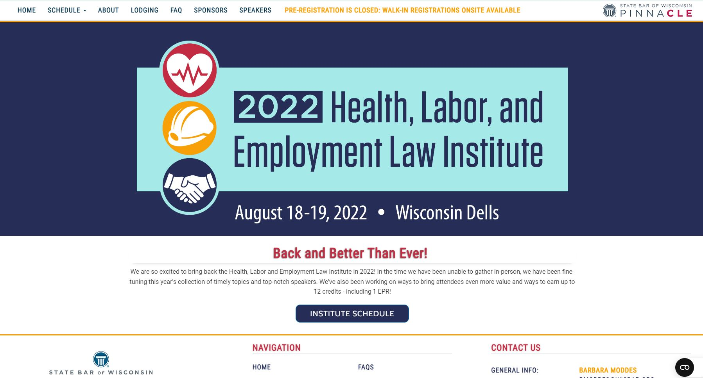
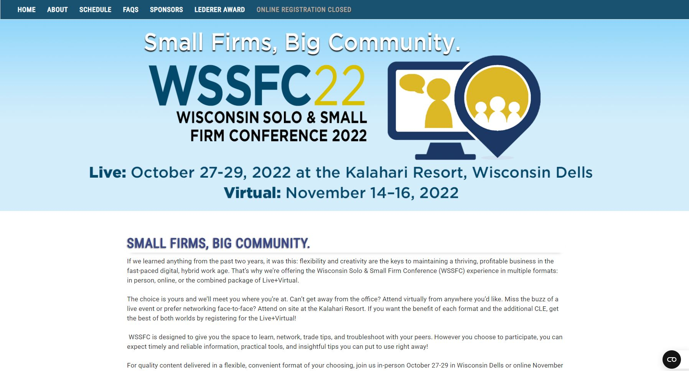
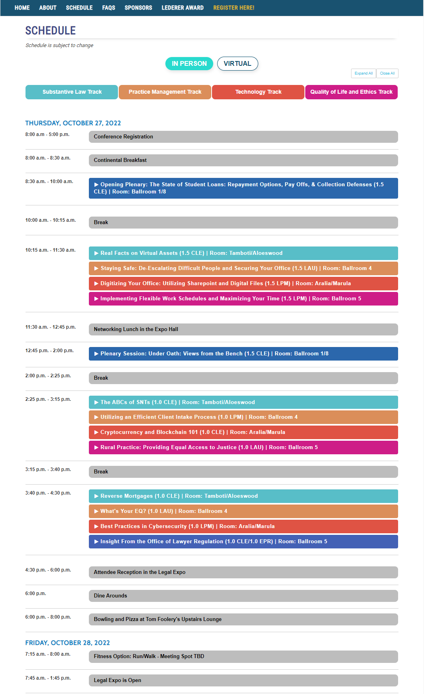

Conferences & Institutes
Conferences & Institutes are microsites that run annually.
They're created to provide users access to event information, schedules,
logding information, tuition, sponsors, speakers, and registration. All
microsites for conferences & institutes are created to be consistent.
Users are familiar with our layout and know where to go.
Client: Seminars & Program Managers
Status: Completed
Annual Meeting & Conferences 2022
See live site here: amc.wisbar.org

Health, Labor, and Employment Law Institute 2022
See live site here: hle.wisbar.org

Wisconsin Solo & Small Firm Conference 2022
See live site here: wssfc.wisbar.org

New 2022: Hybrid conference w/ in person and virtual information
This past year, WSSFC was a little different as it was hybrid. Previous years, the conference was always held in person.
In 2022, I helped lay out the information of in person versus virtual. Below is a snippet of the schedule (only virtual schedule available on live site now).

Back to Top